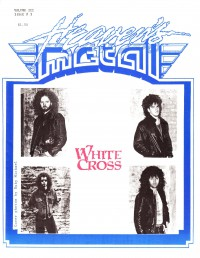
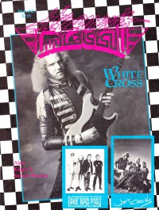
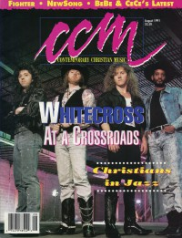
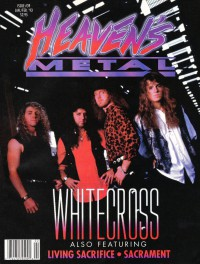

Whitecross
|  |
| 1988 Heaven's Metal |
 |
| June 1990 Heaven's Metal |
 |
| August 1991 CCM |
 |
| January 1993 Heaven's Metal |
Media coverage:
- 1987 in Heaven's Metal "Whitecross", by Doug Van Pelt
- 1987 in Heaven's Metal "Whitecross", by Doug Van Pelt
- Win 1987 in Harvest Rock Syndicate "Metal Shop: White Metal From Whitecross", by Kevin Allison
- 1988 in Heaven's Metal "One On One With Whitecross", by Steve Schmutzer
- Mar 1988 in Heaven's Metal "Metallizing Steve Taylor's Clones: Whitecross On The Road", by Doug Van Pelt
- Apr 1988 in CCM "Notebook: Pop Goes The Metal!", by Doug Van Pelt
- May 1988 in CCM "Toys in the Band: Whitecross"
- Jun 1988 in Heaven's Metal "Taking It To The Limit With Whitecross", by Caroline Knox
- Win 1988 in Harvest Rock Syndicate "Whitecross", by Michael Joel
- Feb 1990 in CCM "In Concert: Spurs Christian Concert Center, Oklahoma City, OK", by Doug Van Pelt
- Jun 1990 in Heaven's Metal "A Look At Momentum In Motion", by Steve Schmutzer
- Feb 1991 in CCM "In Concert: Crossover, Burlington, VT", by Marc Carpenter
- Feb 1991 in Heaven's Metal "Concert Review: Whitecross", by Marc Carpenter
- Aug 1991 in CCM "At A Crossroads", by Brian Quincy Newcomb
- Nov 1991 in Harvest Rock Syndicate "Learning To Balance Life... In The Kingdom", by Dan MacIntosh
- Jun 1992 in CCM "In Concert: Trinity College", by Dave Palmer
- Sep 1992 in Heaven's Metal "Concert Review: Whitecross", by Mario Garcia
- Jan 1993 in Heaven's Metal "Whitecross In High Gear", by Doug Van Pelt
- Feb 1993 in The Lighthouse "Whitecross", by J. Warner Soditus
- Mar 1994 in Heaven's Metal "Metal Tracks: Whitecross / Rex Carroll"
- Sep 1994 in Heaven's Metal "Unveiling The "New" Whitecross", by David Muttillo
- Oct 1994 in CCM "Whitecross Unveiled", by Perucci Ferraiuolo
- Sep 1995 in HM "Never To Be Called A Dinosaur", by David Muttillo
- Mar 1996 in CCM "Heads or Tails", by Ginny McCabe
- Sep 1996 in HM "Hardnews: Whitecross"
- Nov 1996 in HM "Whitecross", by Brian Vincent McGovern
- Feb 2005 in Heaven's Metal "Metal Tracks: Whitecross re-unite"
- Apr 2005 in Heaven's Metal "Whitecross, Rex Carroll", by Michael J. Larson
- Feb 2018 in Metalbreed "Benny Ramos, Whitecross", by Claudia Saavedra
Albums & reviews:
1987: Whitecross
- Oct 1987 in CCM, by Devlin Donaldson, Steve Rabey
- Dec 1987 in Campus Life, by Jim Long
- Win 1987 in Harvest Rock Syndicate, by Ernest P. Strange
- Sum 1988 in Harvest Rock Syndicate, by Ernest P. Strange
- Sep 1988 in CCM, by Steve Rabey, Devlin Donaldson
- Jun 1988 in Heaven's Metal, by Doug Van Pelt
- Nov 1988 in CCM, by Doug Van Pelt
- Win 1988 in Harvest Rock Syndicate, by Ernest P. Strange
- Dec 1989 in CCM, by Doug Van Pelt
- Dec 1989 in Heaven's Metal, by Doug Van Pelt
- Win 1989 in Harvest Rock Syndicate, by Kevin Allison
- Feb 1990 in Campus Life, by Jim Long
- 1990 in Cornerstone, by David Canfield
- May 1991 in Harvest Rock Syndicate, by Kevin Allison
- 1991 in Cornerstone, by David Canfield
- Aug 1991 in CCM, by Doug Van Pelt
- Sep 1991 in Campus Life, by Jim Long
- Sep 1991 in Heaven's Metal, by Joey Knight
- Win 1992 in YouthWorker, by Steve Rabey
- Sep 1992 in Syndicate, by Dave Steiner
- Jan 1993 in CCM, by Jamie Lee Rake
- Jan 1993 in Heaven's Metal, by Doug Van Pelt
- Feb 1993 in The Lighthouse, by Brad Mattern
- Mar 1993 in The Lighthouse, by Bryan W Brendley
- Mar 1992 in Heaven's Metal, by Doug Van Pelt
- Mar 1992 in Syndicate, by Kevin Allison
- Apr 1992 in CCM, by Brian Quincy Newcomb
- Jan 1994 in Heaven's Metal, by Doug Van Pelt
- Aug 1994 in Syndicate, by Arsenio Orteza
- Sep 1994 in CCM, by Bruce A. Brown
- Sep 1994 in Heaven's Metal, by Brent Hershey
- Oct 1995 in Christian Music Crossroads, by Devlin Donaldson
- Sep 1995 in HM, by Brian Vincent McGovern
- Oct 1995 in CCM, by Devlin Donaldson
- Win 1996 in YouthWorker, by Rick Pierce
- Feb 1996 in Campus Life
- Jan 1997 in CBA Marketplace, by Devlin Donaldson
- Jan 1997 in CCM, by Scott Thunder
- Mar 1997 in HM, by Ginny McCabe
- May 1997 in YouthWorker, by Rick Pierce
- Mar 1998 in HM, by Brian Vincent McGovern
- Dec 2005 in Heaven's Metal, by Chris Beck
- Jan 2006 in HM
Award Summary (Nominations / Wins)
Dove Awards- 1989 Dove Awards
- Metal Album: Hammer and Nail
- Metal Album: Triumphant Return
- Metal Recorded Song: "Attention Please"
- Metal Album: In the Kingdom
- Metal Recorded Song: "You're My Lord"
- Metal Recorded Song: "Come Unto The Light"
- Recorded Music Packaging: Equilibrium
- Hard Music Album: Equilibrium
Books about Whitecross
- "3328 White Cross" in Headbangers: The Worldwide Mega-Book of Heavy Metal (Mark Hale, 1993)
- "Whitecross" in The Encyclopedia of Contemporary Christian Music (Mark Allan Powell, 2002)

© 2011 CMnexus. Last updated September 2019. Contact: editor -AT- cmnexus -DØT- org About